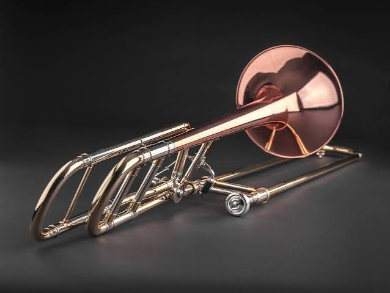

Trombone

The trombone is a brass instrument characterized by a telescopic slide mechanism used to alter the length of the tube and change pitch. It is widely celebrated for its powerful projection, glissando capabilities, and prominent role in jazz bands and classical orchestras.
Types of Trombones
Tenor Trombone
The most common type of trombone, standard in orchestral and jazz settings, offering a balanced and versatile range.
- Price range: from $500 to $4,000+
Bass Trombone
A larger-bore trombone equipped with rotary valves, designed for playing lower registers with a dark and robust timbre.
- Price range: from $1,500 to $5,000+
Contrabass Trombone
An extremely deep-pitched instrument pitched an octave below the tenor trombone, used in large orchestral works.
- Price range: from $4,000 to $10,000+
Valve Trombone
A trombone that replaces the slide mechanism with three valves similar to a trumpet or baritone horn.
- Price range: from $600 to $3,000+
Popular Brands
- Bach
- Yamaha
- Getzen
- Conn
- King